EXP-518 · V4.2 影视分镜剧本
代驾战神 · 第一章
暗夜启程
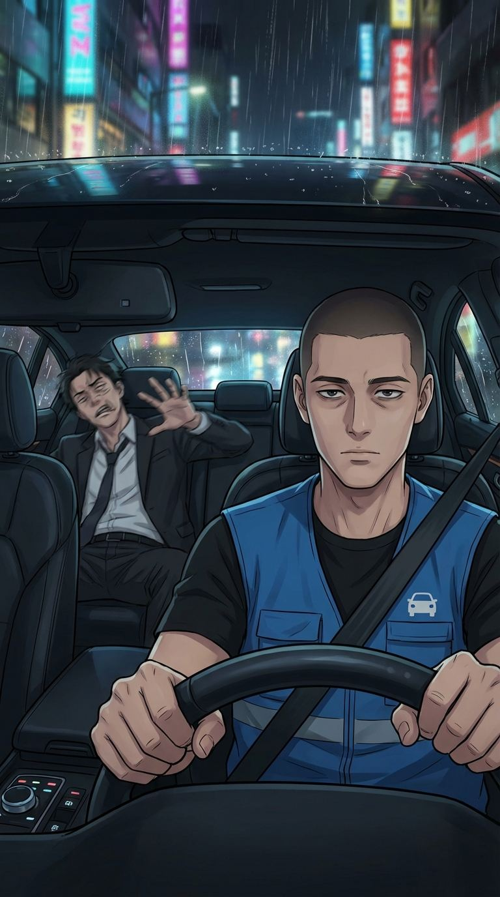
镜01 ｜ 中景·仪表盘视角 ｜ 固定机位
凌晨3:00 · 城市街道
凌晨三点的城市，霓虹灯在雨幕中化成一片模糊的光。
（秦风内心）又一个喝多了的老板。每次都说"我以前也是风云人物"……
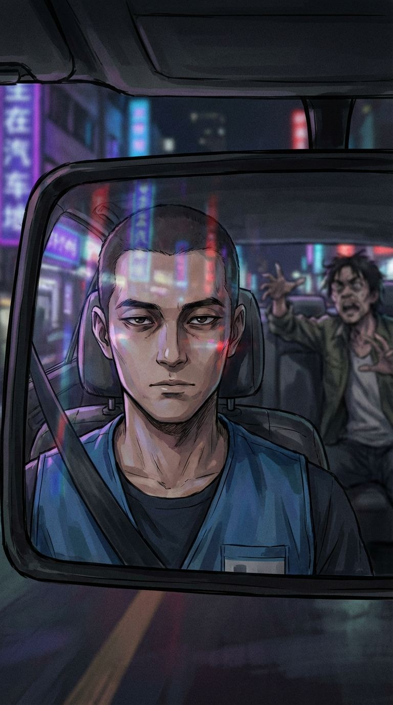
镜02 ｜ 特写·后视镜 ｜ 微推
"我跟你说啊……我当年在商界，那也是叱咤风云的！"
（秦风内心）你算什么。我当年……
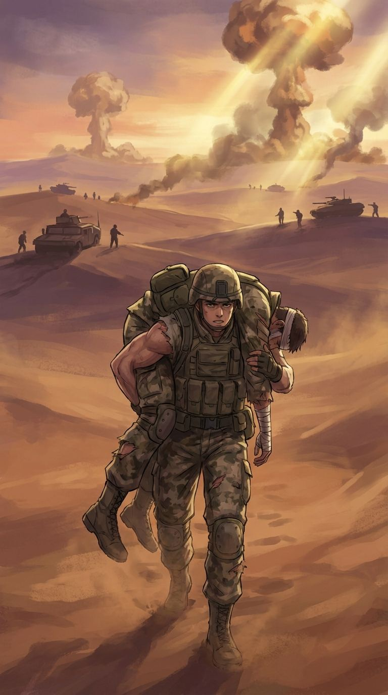
镜03 ｜ 远景·沙漠 ｜ 缓慢横移 ｜ 闪回
【闪回】某年 · 塔克拉玛干沙漠边缘
夕阳将沙丘染成血色。一个身影扛着战友，从包围圈中一步一步走出来。
（秦风记忆）那天我背着老赵走了四十公里。他说"放下我"，我说"闭嘴"。
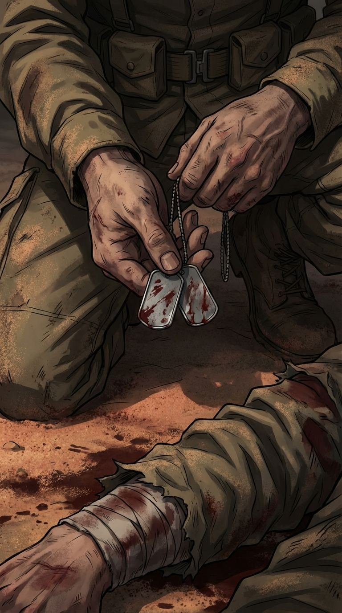
镜04 ｜ 极特写·手部 ｜ 微颤手持感
布满伤疤的手紧紧抓住战友的衣领，指缝间全是沙子和血。
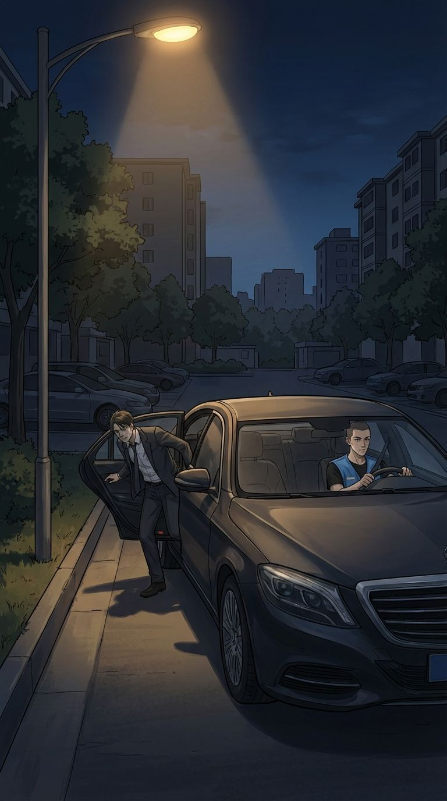
镜05 ｜ 全景 ｜ 回到现在
凌晨3:20 · 某高档小区门口
醉酒老板跌跌撞撞下了车，连代驾费都忘了付。
"明天……明天转给你啊……"
（秦风内心）说这话的十个里有九个不会转。算了。
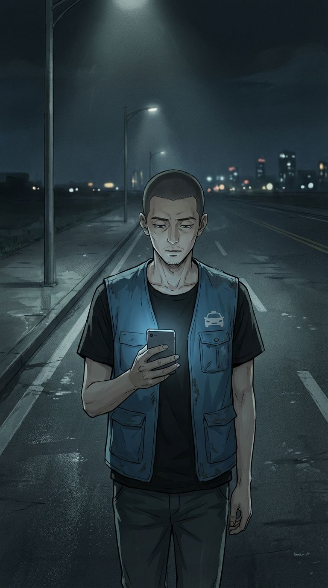
镜06 ｜ 远景·长街 ｜ 缓推
空荡荡的街道，只有秦风一个人的影子被路灯拉得老长。他低头看了眼手机——还有一单。
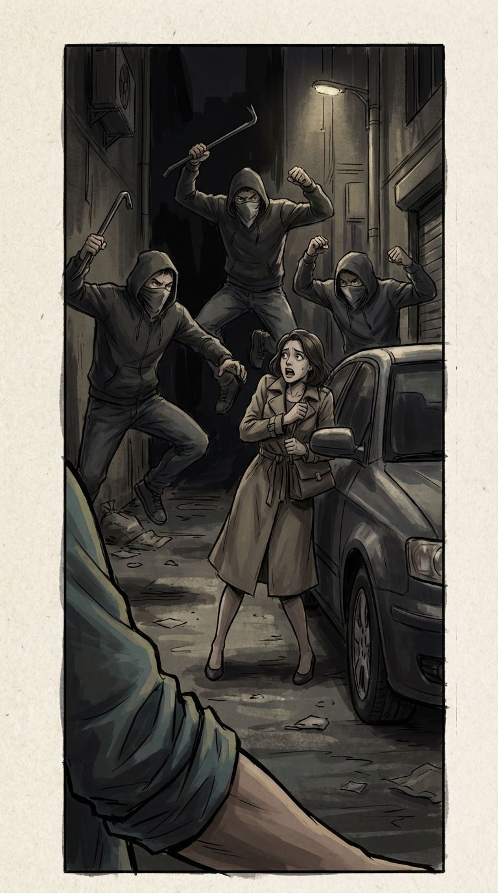
镜07 ｜ 中景·秦风视角 ｜ 手持晃动
凌晨3:25 · 暗巷
三个蒙面男从巷子里窜出来，围住了一个抱着包的女人。
（秦风内心）……真倒霉。今晚本来想早点收工的。
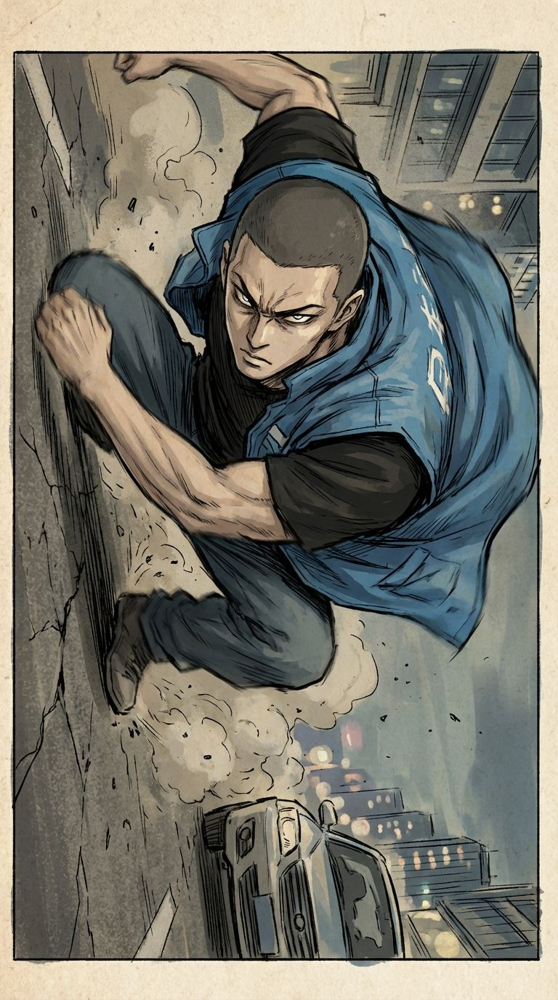
镜08 ｜ 低角度仰拍 ｜ 速度感推镜
秦风的身体比大脑先做出了反应。重心下沉，步伐切换——这是刻入骨子里的战斗姿态。
（秦风内心）我的身体还记得。
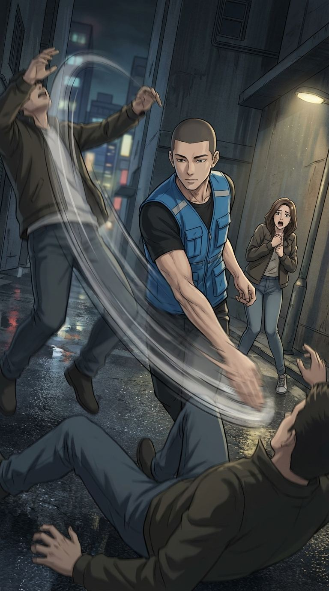
镜09 ｜ 动态·荷兰角 ｜ 快速摇移
三秒。一个过肩摔，一记直拳，两个人倒地。动作干净利落，没有一丝多余。
女人尖叫："啊——！"
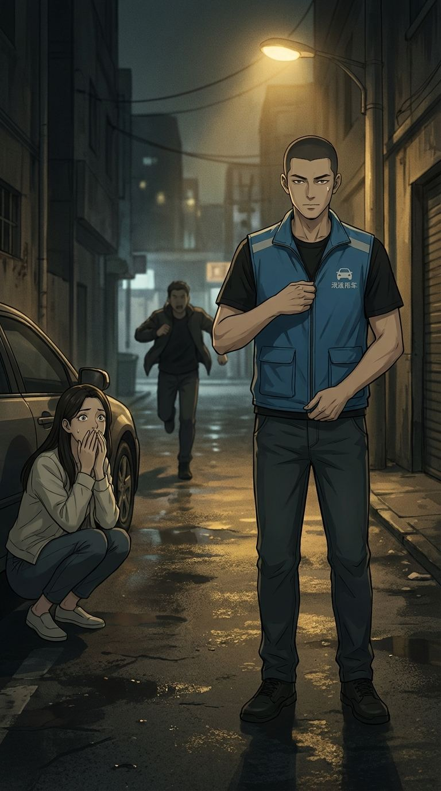
镜10 ｜ 中全景 ｜ 稳定器跟拍
第三个劫匪撒腿就跑。秦风甚至没追，只是淡淡地整了整蓝色马甲的拉链。
（秦风内心）啧，领子皱了。
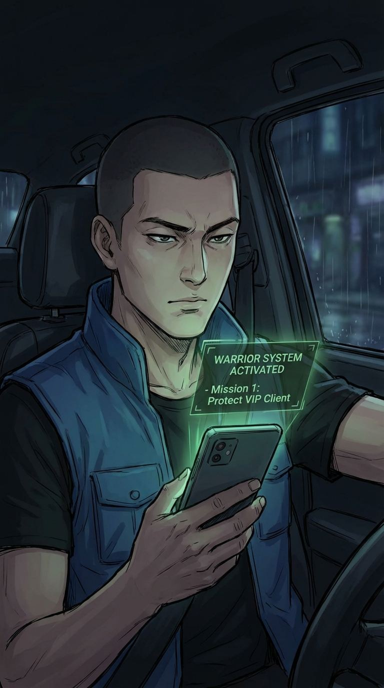
镜11 ｜ 特写·手机屏幕 ｜ 固定
手机突然亮了。一个从未安装过的APP出现在屏幕上——军事风格界面，绿色全息字体。
【战神系统已激活 · 任务一：保护VIP客户】
（秦风内心）……我手机被黑了？
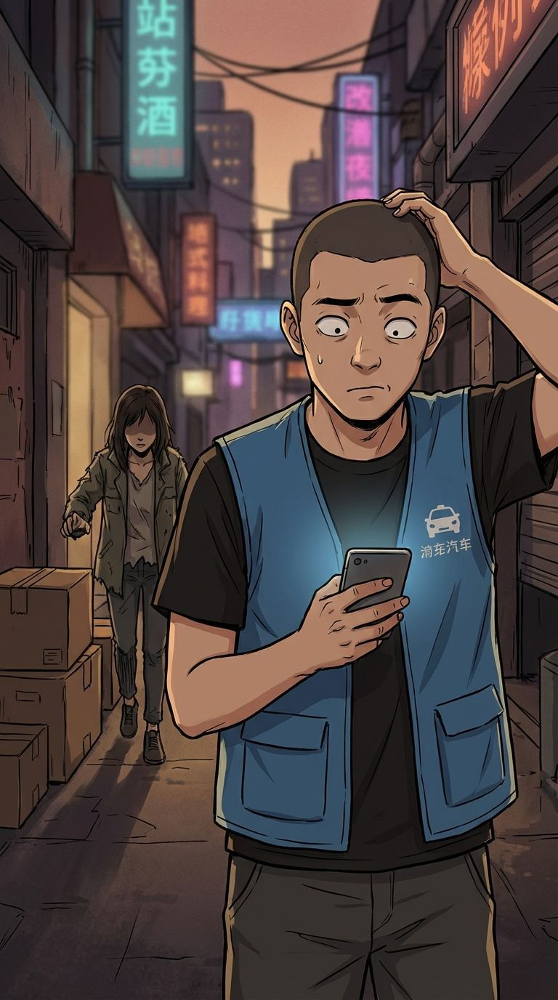
镜12 ｜ 中景 ｜ 固定
秦风一脸困惑地挠了挠头——这表情配上他刚才雷霆一击的身手，形成了极其荒诞的反差。
（秦风内心）VIP客户？我是代驾，不是保镖。时薪差十倍好吧。
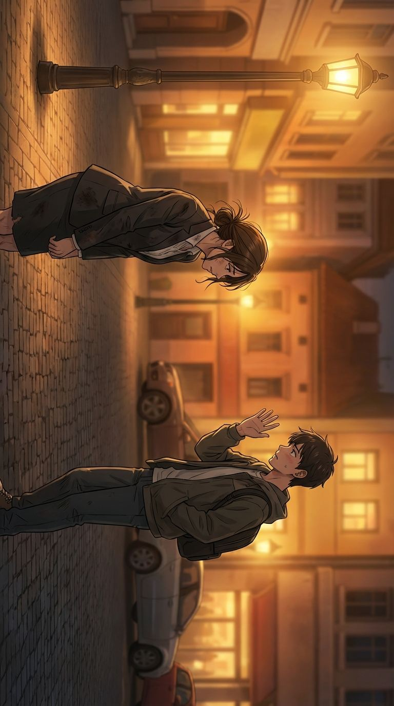
镜13 ｜ 中景·暖光 ｜ 缓推
被救的女人整理了一下凌乱的衣服，深深鞠了一躬。她穿着名牌西装，显然是个女强人。
"谢谢你……你是练过的吧？"
秦风："没有，我就是个代驾。"
（秦风内心）说了你也不信。
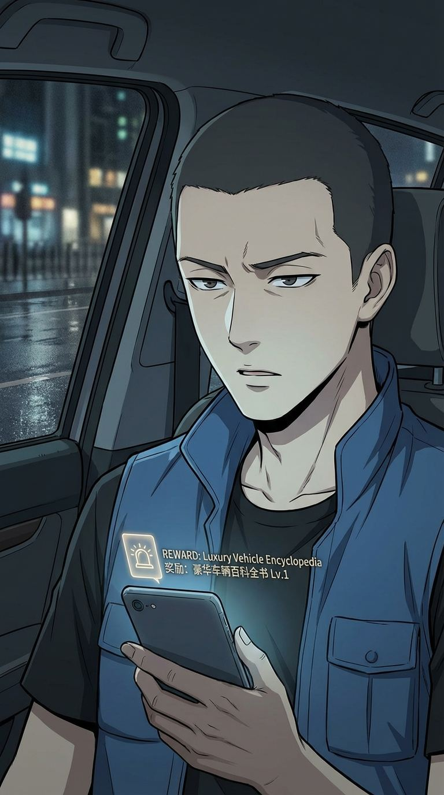
镜14 ｜ 特写·手机 ｜ 微推
系统弹出奖励通知。
【奖励已发放：豪车鉴赏知识 Lv.1 — 可识别200种车型及其驾驶特性】
（秦风内心）……这奖励对代驾来说还真挺实用的。等等，我为什么觉得这很正常？
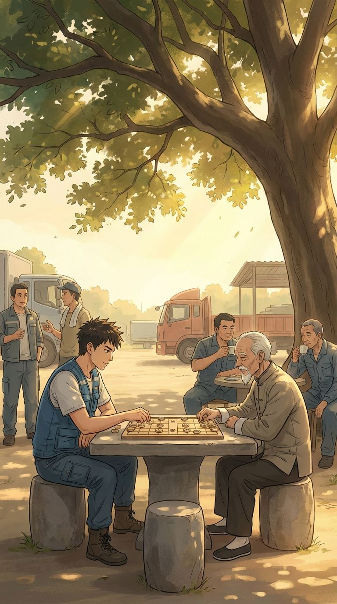
镜15 ｜ 全景·暖色调 ｜ 固定 ｜ 场景转换
上午10:00 · 代驾站
阳光透过梧桐叶洒下来，斑驳地落在棋盘上。秦风和王大爷在树下杀得难解难分。
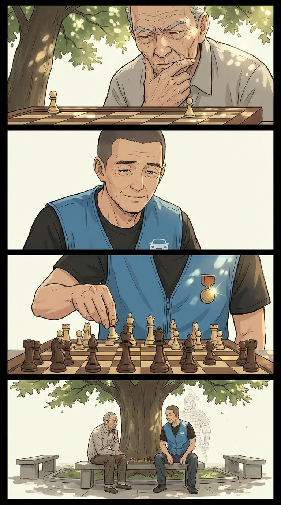
镜16 ｜ 特写·棋盘 ｜ 浅景深
王大爷："将！小秦你不行啊，心不在焉的。"
秦风笑着："大爷您这是象棋界的降维打击。"
没有人知道，这个笑眯眯下棋的代驾小哥，昨晚三秒撂倒了三个劫匪。
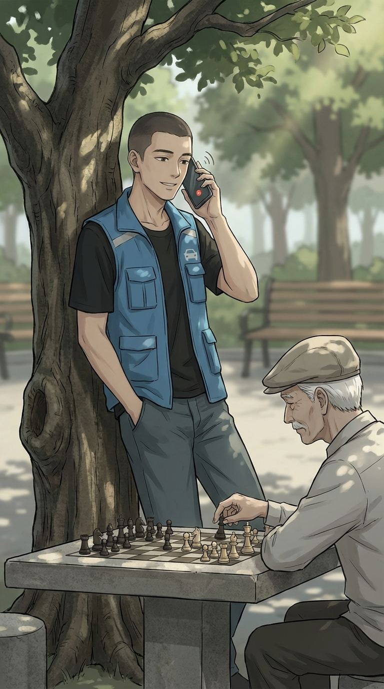
镜17 ｜ 中景 ｜ 手持自然感
手机响了。秦风看了眼来电显示——"老赵"。
"秦风你在干嘛？"
"下棋。"
"……你认真的？"
（秦风内心）老赵永远不理解，退役后最爽的事就是能好好下盘棋。
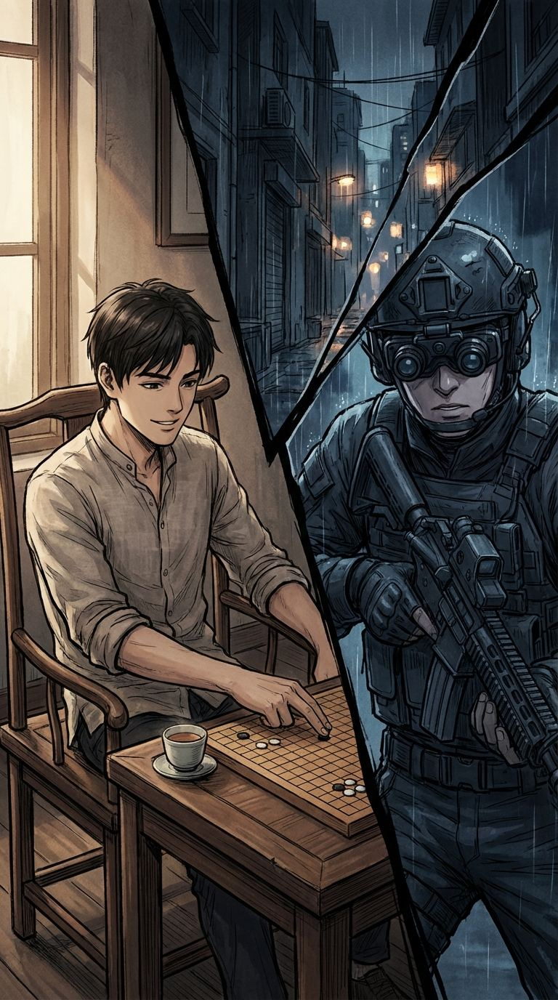
镜18 ｜ 艺术分屏 ｜ 对比蒙太奇
两个世界，同一个人。左边：阳光下的棋盘、茶杯、梧桐叶。右边：夜色中的战术装备、夜视仪、枪口火焰。
（秦风内心）那些日子已经过去了。现在的我，只是一个代驾。
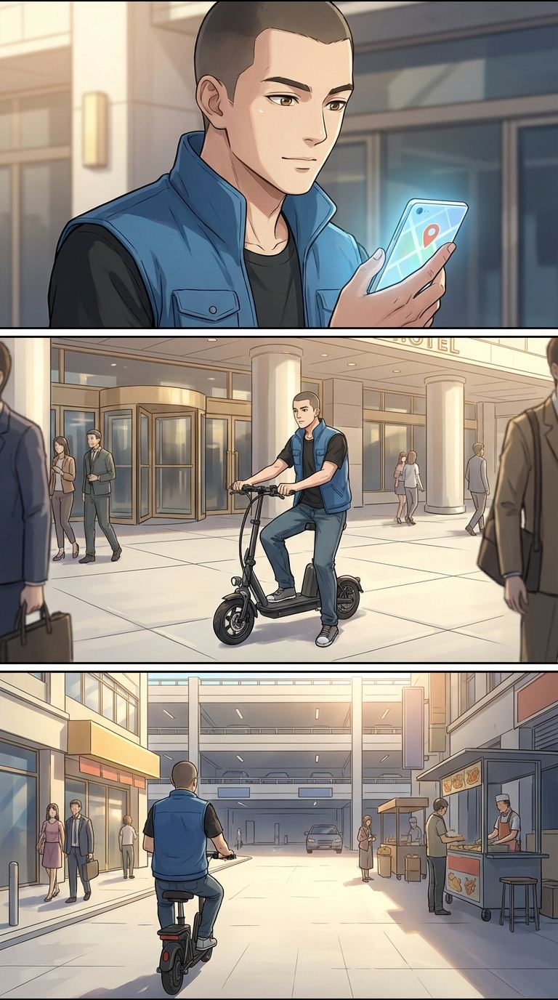
镜19 ｜ 中景 ｜ 跟拍
手机弹出新订单——接客地点：国际大酒店。秦风骑着电动车出发，穿过熙熙攘攘的市井街道。
（秦风内心）国际大酒店，不错，客户应该比较文明，不会吐在车上。
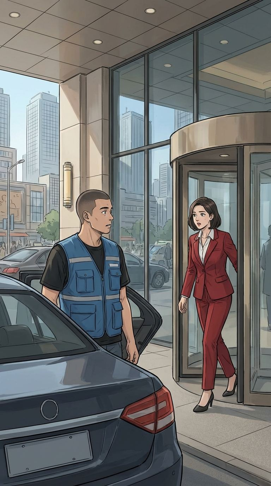
镜20 ｜ 全景·酒店门口 ｜ 缓推
玻璃旋转门推开，一个穿红色西装的女人走了出来——
（秦风内心）等等，这不是昨晚那个……
苏依然也看到了他，脚步顿了一下。
苏依然："……是你？"
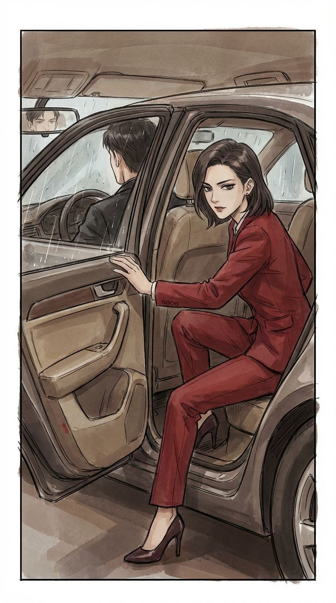
镜21 ｜ 车内中景 ｜ 固定
苏依然坐进后座，安全带拉好。白天的她和昨晚完全不同——气场强大、目光锐利。但看向秦风时，眼里多了一丝信任。
"去华远大厦。"
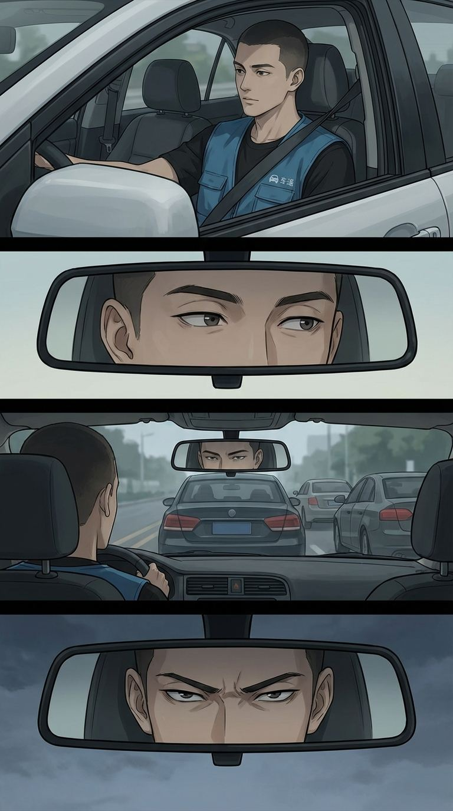
镜22 ｜ 特写·后视镜中的眼睛 ｜ 微推
秦风习惯性地扫了一眼后视镜。三辆车后面，一辆黑色轿车不紧不慢地跟着。
（秦风内心）跟了三个红绿灯了。普通司机不会这么巧。
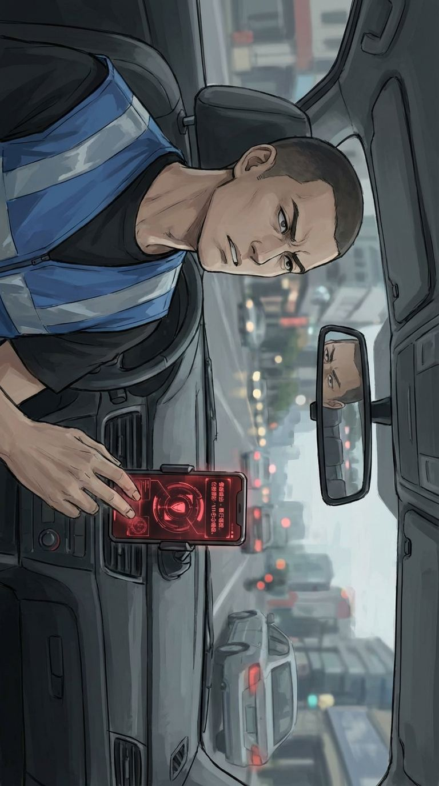
镜23 ｜ 仪表盘视角 ｜ 固定
手机上的战神系统自动弹出警报。
【威胁检测：尾随车辆确认。任务升级：确保VIP安全。】
（秦风内心）好吧，这系统至少比导航准。
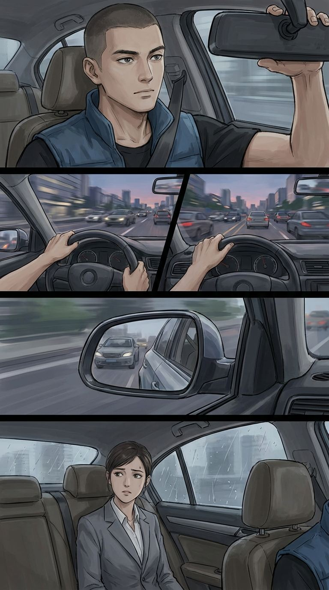
镜24 ｜ 外景跟车 ｜ 运动摄影
秦风不动声色地切了个车道，观察后方反应。黑色轿车也切了。
苏依然察觉到了："你在……绕路？"
秦风："不是，前面修路。"
（秦风内心）十年前我在沙漠里甩过武装皮卡，现在在市区甩个轿车，不过分吧？
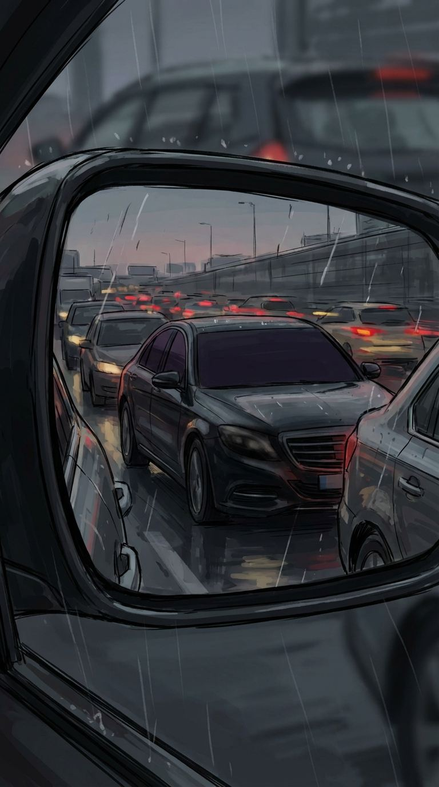
镜25 ｜ 侧后视镜视角 ｜ 固定
后视镜里，黑色轿车的深色贴膜遮住了里面的一切。它就像一只潜伏的鲨鱼，耐心地跟在猎物身后。
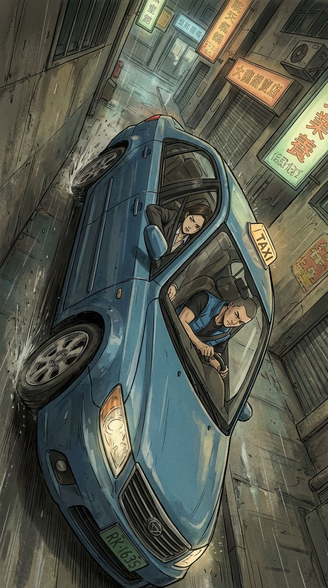
镜26 ｜ 外景·窄巷 ｜ 动态跟拍
方向盘猛打！车子钻进一条只有两米宽的老巷子，两侧砖墙几乎擦着车漆。
苏依然死死抓住扶手："你疯了？！"
秦风："放心，误差不超过五厘米。"
（秦风内心）在部队开装甲车过峡谷的时候，比这窄多了。
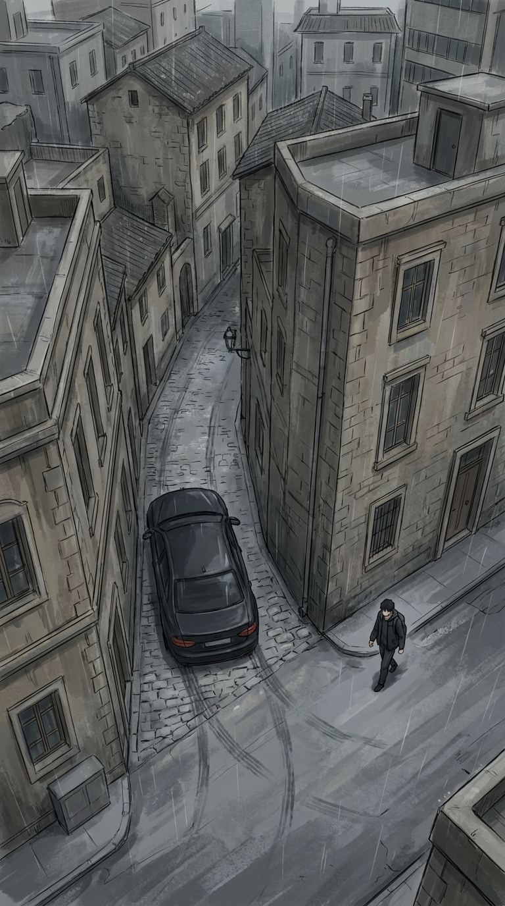
镜27 ｜ 俯拍 ｜ 航拍视角
黑色轿车被卡在巷口，进不去。等它绕路时，秦风已经从另一头出去，汇入了主干道。
（秦风内心）甩掉了。代驾八年，这城市的巷子我比导航还熟。
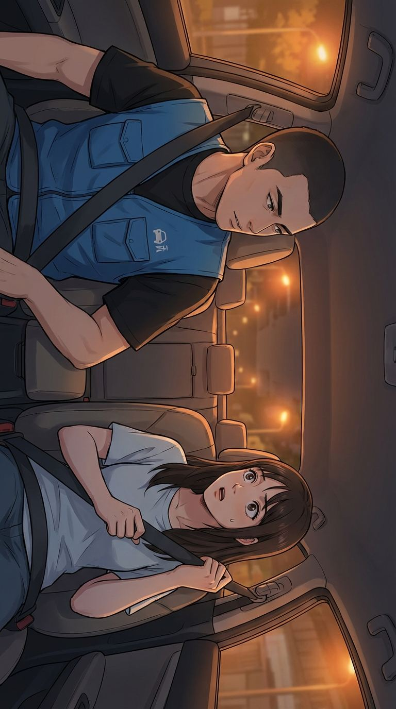
镜28 ｜ 车内双人 ｜ 侧面
安全停车后，秦风转过头看着后座的苏依然。他的表情严肃，但眼神是温和的。
"有人在跟你。你知道吗？"
苏依然沉默了几秒，点了点头。
镜29 ｜ 特写·平板文件 ｜ 浅景深
苏依然打开平板电脑，给秦风看了一份文件。公司并购纠纷，有人想在关键会议前"阻止"她出席。
"我不该跟一个代驾说这些。但你昨晚……"
秦风："我只是个代驾。把你安全送到目的地，是本分。"
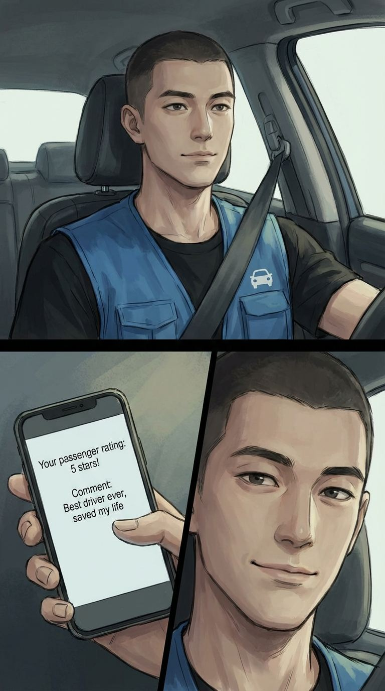
镜30 ｜ 特写·手机 ｜ 固定
手机弹出乘客评价通知。
【乘客评价：★★★★★ · "有史以来最好的代驾，救了我的命"】
（秦风嘴角微微上扬）好评倒是真的给了。比那些说"明天转"的强多了。
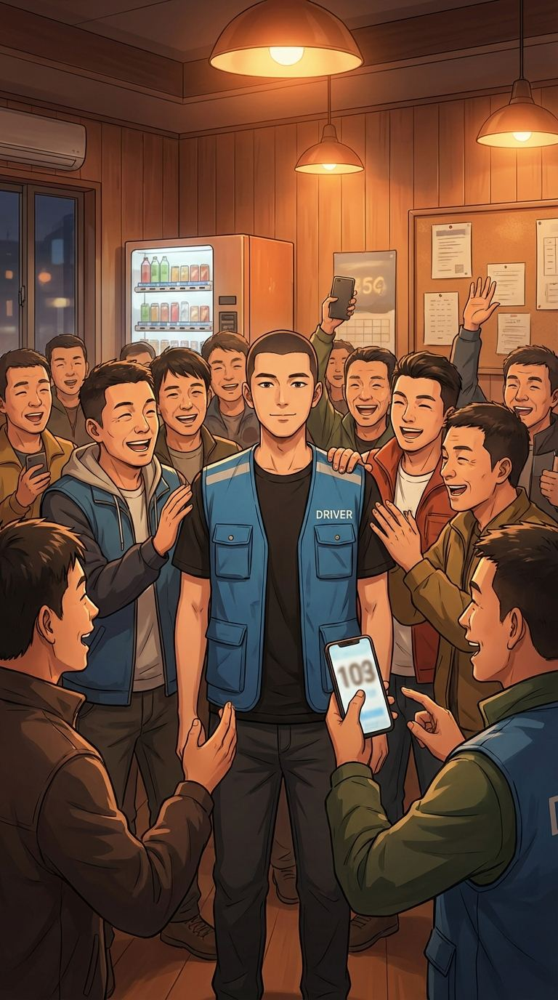
镜31 ｜ 全景·暖色 ｜ 场景转换
晚上7:00 · 代驾站休息室
代驾站的兄弟们围着秦风，眼睛都在发光——他今天拿到了500块小费。
"秦哥！五百块！你到底接的什么单？"
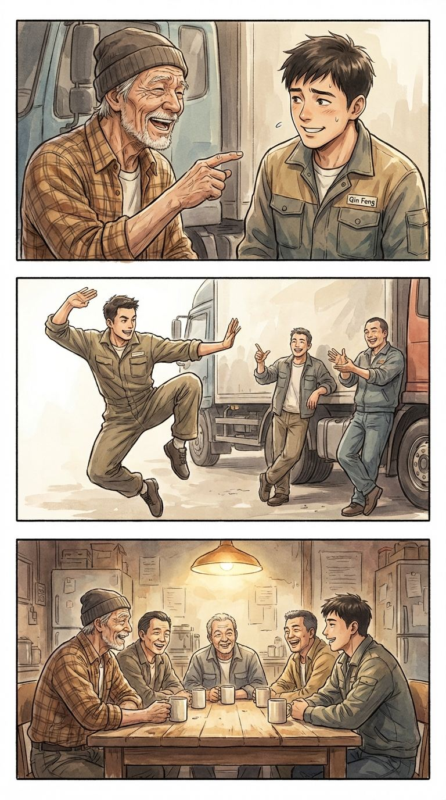
镜32 ｜ 群像·中景 ｜ 手持自然感
胖子张哥比划着拳脚："听说秦哥还会武功？来两招看看！"
秦风一脸无辜："我就是开车开得好而已。"
王大爷在角落插嘴："下棋也不行，今天被我杀了三盘。"
众人哄堂大笑。
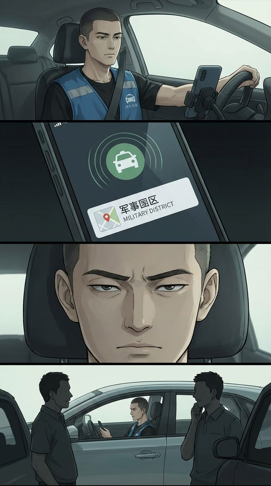
镜33 ｜ 特写·面部 ｜ 景深变化
手机又震了。新订单——接客地点：军区家属院。
（秦风的笑容凝固了半秒，其他人没注意到）
（秦风内心）军区……是巧合吗？
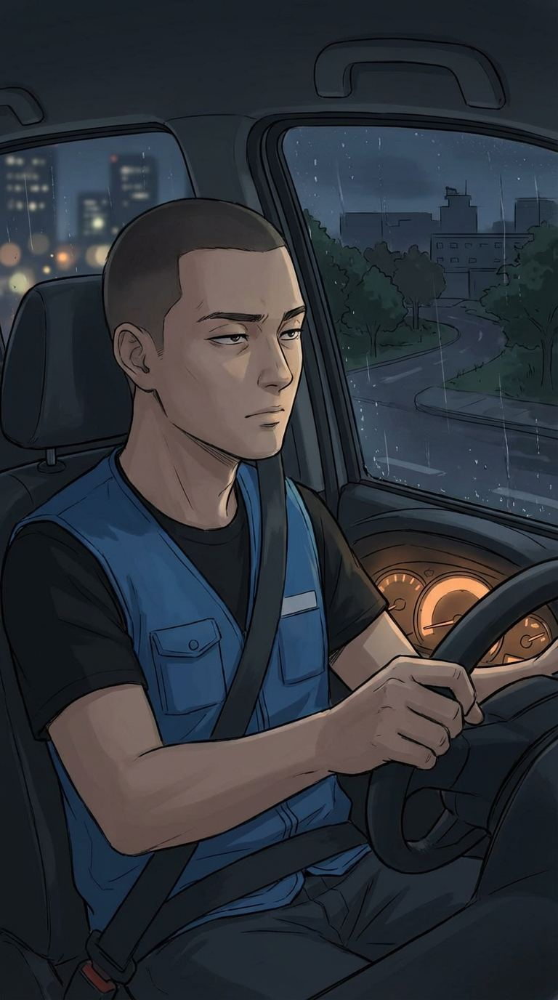
镜34 ｜ 车内·仪表盘光 ｜ 缓推
晚上9:30 · 城郊公路
城市灯火在身后渐渐远去，前方的路越来越暗。秦风的脸被仪表盘的微光映成半明半暗。
（秦风内心）这条路……我以前走过。新兵报到那天，就是这条路。
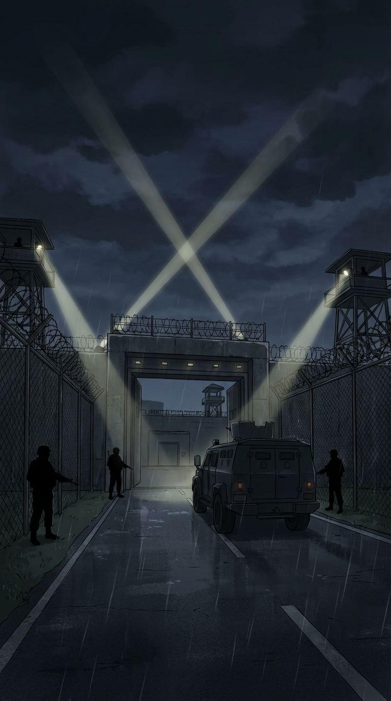
镜35 ｜ 远景·军事基地 ｜ 固定
铁丝网、探照灯、荷枪实弹的岗哨。军区大门在夜色中透着肃杀之气。
（秦风内心）四年了。我以为这辈子不会再来这个地方。
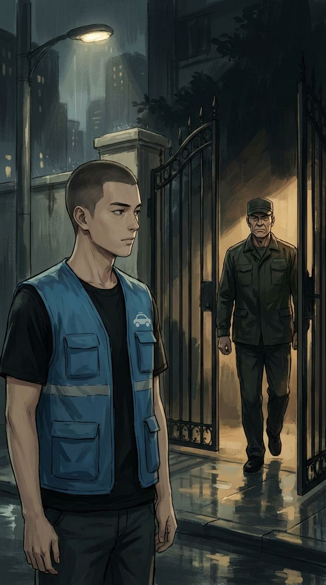
镜36 ｜ 中景·逆光剪影 ｜ 缓慢推近
从门岗阴影中走出一个人。便装，但站姿笔挺——那种骨子里的军人气质，退役十年都抹不掉。
路灯的光一寸一寸地照亮他的脸。
（秦风内心，声音颤抖）……周……周教官？！
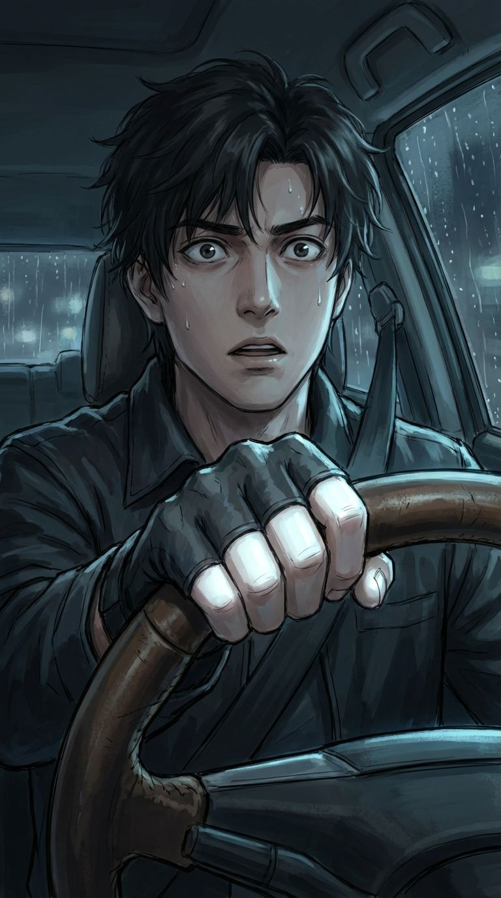
镜37 ｜ 极特写·面部 ｜ 固定
秦风的表情变了。这是他今天——不，这四年来——第一次露出真正的震惊。
握方向盘的手，指节发白。
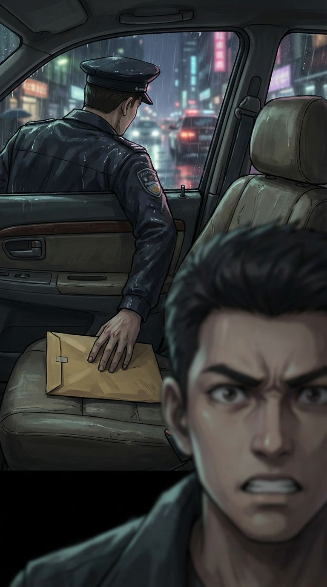
镜38 ｜ 双人·电影景深 ｜ 固定
周教官拉开车门，将一个密封信封放在副驾上。上面印着军徽。
"秦风。国家需要你。"
秦风："……我已经退役了。"
"我知道。所以我来找你，而不是下命令。"
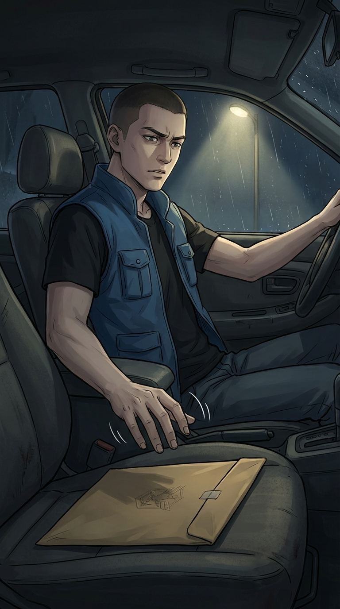
镜39 ｜ 特写·信封 ｜ 单一光源
周教官转身离去。车内只剩秦风一个人，和副驾上那个沉甸甸的信封。
（秦风内心）我以为离开部队就能过普通人的生活。下棋、代驾、和大爷吹牛。
（秦风内心）但有些东西，你以为放下了，其实只是藏起来了。
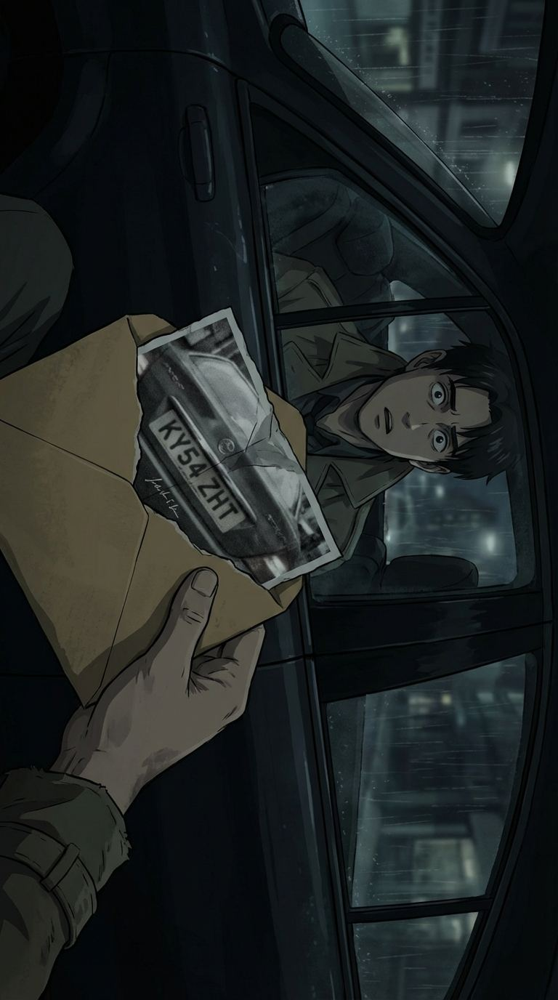
镜40 ｜ 极特写·信封内容 ｜ 推焦
信封拆开，里面是一张照片——
一个车牌号。
正是今天白天跟踪苏依然的那辆黑色轿车。
（秦风内心）……这不是巧合。从来都不是。
第一章 · 完
代驾战神 · 暗夜启程
EXP-518 | V4.2 影视分镜剧本 | Trinity v3